Choosing The Right Technology For Every Operational Environment
Choosing The Right Technology For Every Operational Environment
Operational visibility begins with understanding where people, vehicles and assets are located.
The challenge is that no single positioning technology is suitable for every environment.
Each presents different operational requirements.
iottag combines multiple positioning technologies to deliver the visibility, accuracy and reliability required across complex operational environments.
Underground mines
Industrial facilities
Construction & Airports
Tunnels
Bridge structures
Technology Should Match The Environment
Every operational environment presents different challenges.
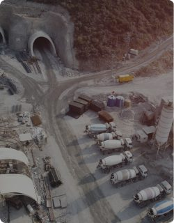
Coverage
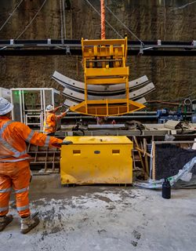
Accuracy
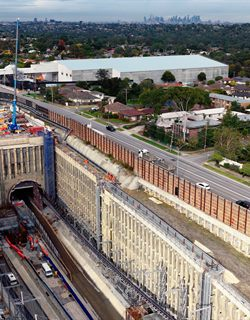
Infrastructure requirements
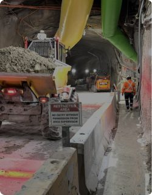
Environmental conditions
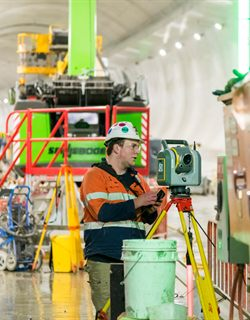
Operational objectives
Selecting the right positioning technology is critical to achieving reliable operational visibility
Rather than forcing a single technology into every environment, iottag evaluates operational requirements and designs the most appropriate solution
Positioning Technologies Supported
Bluetooth Low Energy (BLE)
Flexible workforce and asset visibility.
Ideal for large-scale operational environments requiring cost-effective coverage.
Applications:
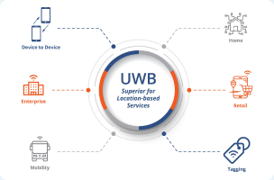
Ultra-Wideband (UWB)
High-accuracy positioning for environments where precise location information is required.
Applications:
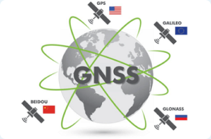
GPS / GNSS
Outdoor operational visibility across large sites and distributed operations.
Applications:
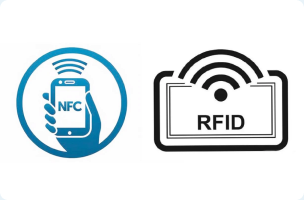
RFID & NFC
Access control, workforce accountability and operational workflows.
Applications:
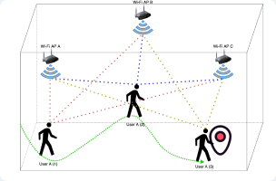
Wi-Fi Positioning
Leveraging existing infrastructure to enhance operational visibility.
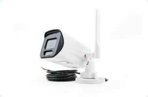
Camera Vision
Providing visual operational awareness and supporting AI-driven situational understanding.
Applications:
Hybrid Positioning Environments
Many operations require multiple positioning technologies working together, for example:
Underground Tunnel
Airport
Accuracy Is Only One Requirement
Many positioning projects focus solely on accuracy.
Operational outcomes depend on far more.
Coverage
Reliability
Battery life
Scalability
Maintainability
Operational integration
Lifecycle costs
The right positioning technology balances all of these requirements.
Positioning Technologies As Part Of Operational Intelligence
Location information alone does not create value.
Value is created when location information is combined with:
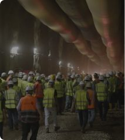
Workforce activity
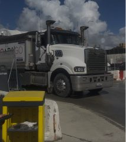
Fleet movement
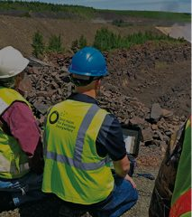
Environmental conditions
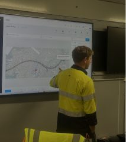
Operational events
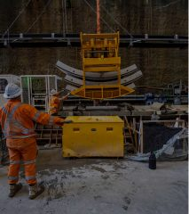
Production systems
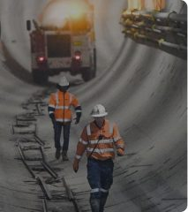
Safety controls
This creates the operational context required to support Operational Intelligence.

Engineered for the environment
Every operational environment is different.
Discover how iottag selects and combines positioning technologies to deliver reliable operational visibility.